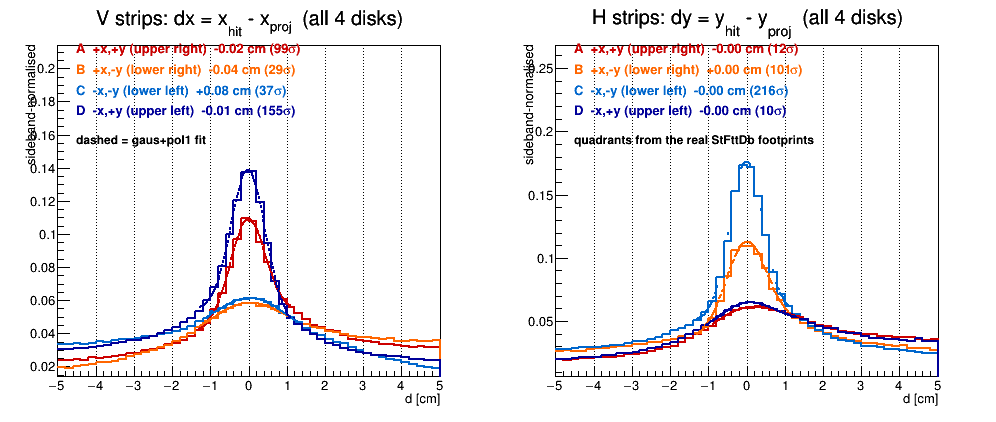
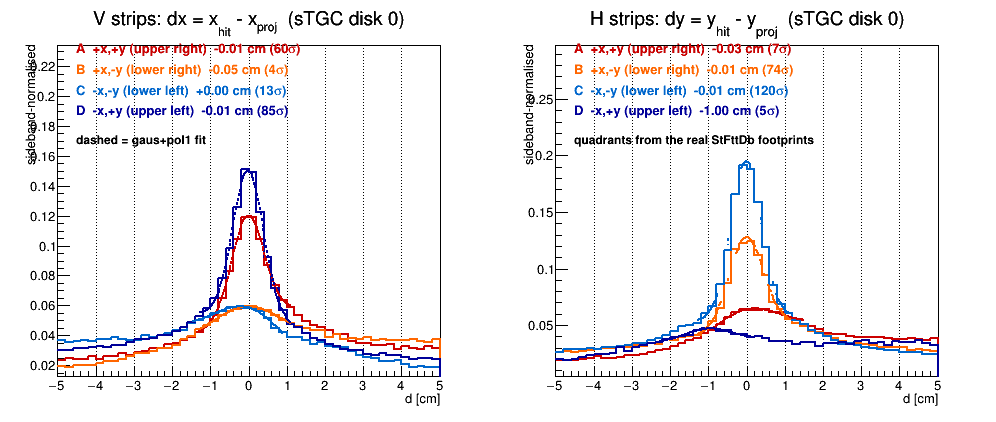
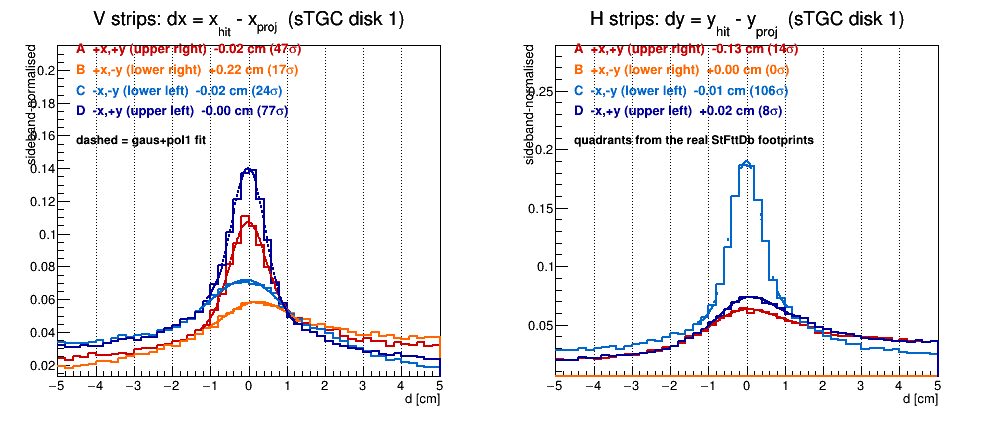
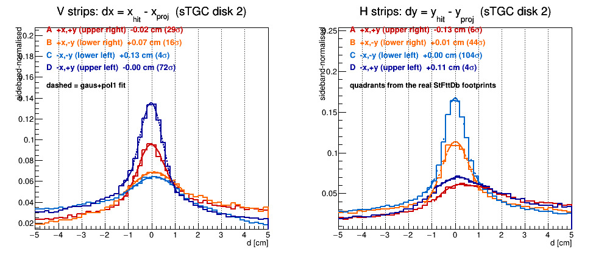
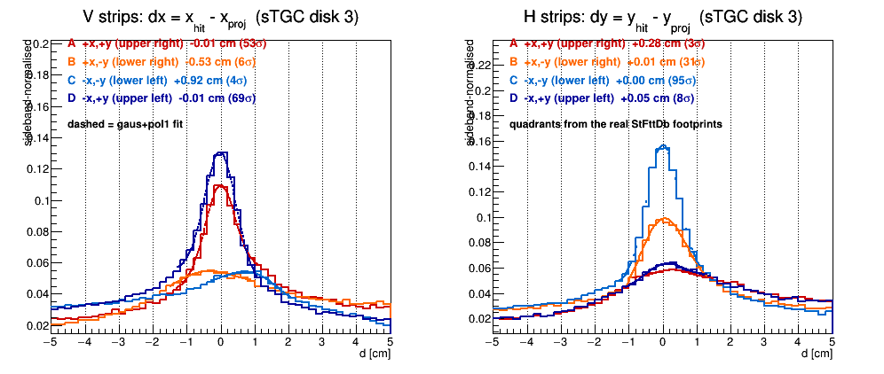
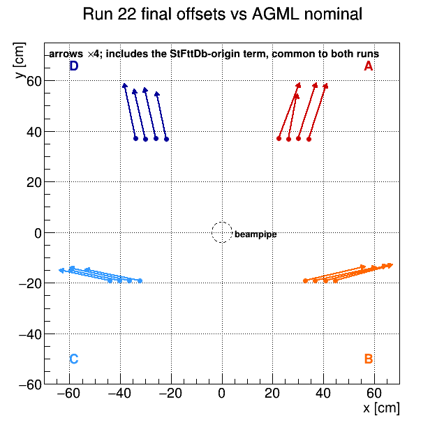
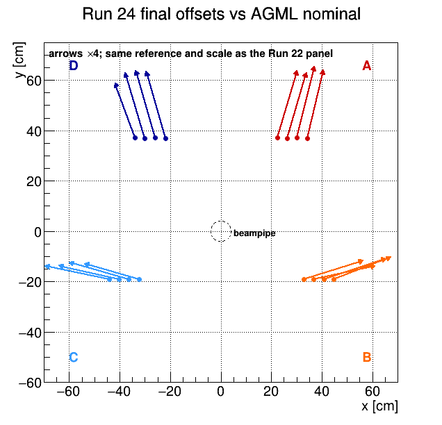
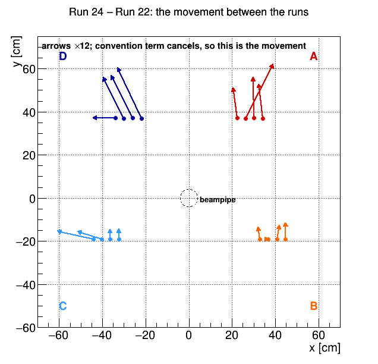
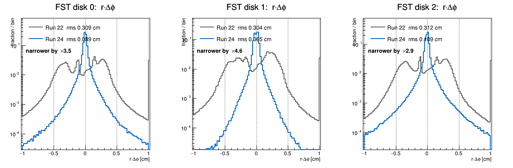

STAR forward upgrade, FST/sTGC geometry and alignment — Alignment program | Geometry and mapping | Tracking performance
The alignment campaign and the constants it produced. The geometry and mapping it rests on is on the geometry page; what the resulting hits do for tracking is on the tracking page.
Everything below is measured with the sTGC hit positions still coming from StFttDb's hardcoded per-quadrant constants. That is the point: it is the input to the next step, in which StFttDb takes those positions from the DB survey tables instead and the residual should collapse towards zero.
Five changes landed before this measurement was taken, in this order:
That last one gave a clean check of the whole chain. The blind residual in y moved by +3.19 / +3.25 / +2.93 / +3.01 mm across the four stations against an FST move of −3.197 mm: 1:1 to 3%, and flat. A vertex-anchored track would pivot and give a 1 mm rise from station 1 to 4 (the lever arm zsTGC/zFST ≈ 2); there is none, at 59-183 σ. So the track translates bodily — the TPC vertex is contributing very little to constraining these fits, which is worth knowing before anyone leans on vertex-constrained forward tracks. dx is not understood: it moved −5.05 mm against −1.62 mm expected, factor 3.1, also flat.
30 files of zero-field run 23063028, FST+vertex tracks projected to the sTGC, sTGC hits never added to the track, quadrants taken from the real StFttDb footprints (not from the signs of x and y — the four quadrants do not meet at the origin).
| quadrant | dx [cm] | dy [cm] | direction |
|---|---|---|---|
| A (x>0, y>0) | −1.06 | −1.94 | towards the axis |
| B (x>0, y<0) | −1.26 | +1.02 | towards the axis |
| C (x<0, y<0) | +0.55 | +1.31 | towards the axis |
| D (x<0, y>0) | +0.68 | −1.39 | towards the axis |
Median over the four stations; station 3 quad C has dx = −2.33 at only 5.6 σ against +0.71/+0.71/+0.39 elsewhere and a mean would be dragged by it. Station 1 quad A has no V-strip entries at all — the H/V swap suspected since 2026-07-21 — so that one cell stays uncorrected.
Every sign points inward. The reconstructed sTGC hits sit systematically ~1-1.9 cm closer to the beam axis than the tracks say. That is a radial contraction, not a translation, and it is the main thing to keep in mind about the numbers below: sixteen per-quadrant offsets can absorb it, and will drive the residual to ~0, but if the cause is a scale (an FST radial error, the strip pitch, something else) the constants will not generalise. A pure z error cannot explain it — it would need Δz ≈ 10 cm at r ≈ 46 cm. Worth one plot before these are trusted as alignment: split a quadrant's residual by radius. Flat means a genuine offset, sloped means a scale.
|
|
| correction −d at each quadrant centre, ×10. All four outward. | the same thing as distributions, all four stations summed. |
 |
 |
 |
 |
| station 1 | station 2 | station 3 | station 4 |
StFttDb now has a switch, DB by default, in which the hardcoded per-quadrant constants are not used at all. The offsets become
AGML placeholder + stgcOnTpc + stationOnStgc[station] + pentOnStation[4*station+pent]
The tables were written as (StFttDb origin − AGML placeholder) + alignment, so the hardcoded term cancels algebraically and what comes out is the true position — and it is the same quantity AGML computes from the same inputs. Geometry and hit positions stop being two things kept in step by hand. Checked on data: quadrant A station 1 comes out (2.15244, 12.2029, 312.342) cm against the STFM_1 node at (2.152, 12.203, 312.342).
Because the hit itself moves, the sTGC correction acts on the residual 1:1 — no lever arm, unlike the FST one above, since nothing goes through the track fit. So one iteration should be enough to centre it.
Two things had to move with it. FwdTracker read the quadrant boundaries from StFttDb's statics, which stay at the hardcoded placeholder while the hits move 1-2 cm — every hit near a quadrant edge would have been mislabelled, silently. And the table generator's absolute form is valid only while StFttDb is in hardcoded mode: from the next iteration the update is new = previous + delta, now enforced rather than documented.
Section 7 is the input state, with sTGC hit positions still coming from StFttDb's hardcoded constants. This is the same measurement with the DB survey tables driving those positions instead. Same 2500 events in both, one flag apart (useDbGeometry), so nothing here is a statistics or sample difference.
| station | dy, tables OFF | dy, tables ON | σ |
|---|---|---|---|
| 1 | +1.301 | +0.327 | 9.3 |
| 2 | +1.277 | +0.350 | 6.5 |
| 3 | +1.092 | +0.346 | 8.3 |
| 4 | +1.042 | +0.284 | 7.3 |
All four stations summed: dy +1.175 → +0.325 cm, a 72% reduction, at σ ≈ 16. Entries are essentially unchanged (59651 → 56502), so this is the peak moving, not acceptance being lost.
dx goes +0.630 → −0.446: it overshoots through zero. The magnitude still falls by ~29%, but the sign flip says the dx correction is too large by roughly a factor two. That is consistent with dx being the coordinate we do not yet understand — see the factor-3.1 response in section 7 — and it is the obvious thing for the next iteration to fix, via script/stgcTableAddDelta.py rather than by regenerating the table.
The controlled 2500-event A/B below is confirmed at campaign scale. 90 jobs, all of them reporting the DB tables and zero falling back:
| station | dy, hardcoded | dy, DB tables | σ |
|---|---|---|---|
| 1 | +1.324 | +0.346 | 197 |
| 2 | +1.296 | +0.346 | 132 |
| 3 | +1.122 | +0.373 | 195 |
| 4 | +1.095 | +0.363 | 165 |
dy −74%, uniform across stations, agreeing with the 2500-event A/B (+0.325) to well within the spread. Three independent measurements now give the same answer.
| quadrant | dy before | dy after | verdict |
|---|---|---|---|
| A (x>0,y>0) | −1.86 | +0.82 … +0.91 | overshot |
| D (x<0,y>0) | −1.46 | +0.83 … +1.32 | overshot |
| B (x>0,y<0) | +1.02 | +0.31 … +0.36 | good |
| C (x<0,y<0) | +1.31 | +0.35 … +0.36 | good |
B and C land near zero and are consistent station to station. A and D crossed zero and overshot by ~0.9 cm. That is not a failure of the mechanism — the 20211112.000002 table was derived from the earlier 5-file ideal-geometry run, so its corrections do not match the residual the misaligned-FST geometry actually leaves. This is precisely the case the incremental update exists for: script/stgcTableAddDelta.py, new = previous + delta. Regenerating the table absolutely would be wrong now that StFttDb runs DB-driven.
dx likewise overshoots, +0.65 → −0.39 summed. And the dx widths grew on stations 1 and 3 (0.41→0.53) while the dy widths narrowed (0.39→0.34) — a rigid shift should not broaden anything, so the dx correction is not behaving as a pure translation. That ties back to the unexplained factor-3.1 dx response and to the residual being radial rather than translational.
|
 |
| before — hardcoded StFttDb. All four arrows outward, 1–1.9 cm. | after — DB tables in. B and C nearly gone; A and D reversed, having overshot. |
 |
 |
 |
 |
 |
| all 4 stations, tables in | station 1 | station 2 | station 3 | station 4 |
90 jobs, 1.17M events. Compare against the same plots in section 7, which are the hardcoded-StFttDb input state over 30 files.
Slide 2 of the 2026-09-29 deck asks for spacepoint / planar / planar+tables side by side. All three are the same 2500 events; stage 1 needed its own build because kUseSpacePoints is a compile-time constant.
| stage | dx [cm] | dy [cm] | σdy | radial |d| [cm] |
|---|---|---|---|---|
| 1 spacepoint | +1.159 | +0.852 | 19.4 | 1.44 |
| 2 planar | +0.630 | +1.175 | 16.4 | 1.33 |
| 3 planar + FTT tables | −0.446 | +0.325 | 16.5 | 0.55 |
Spacepoint and planar essentially trade dx against dy rather than one being better — which is the same conclusion as the 17.72% vs 17.29% purity comparison in section 5. The real gain comes from the tables. Since the residual is radial (section 7), the combined magnitude is the honest single number: 1.44 → 1.33 → 0.55 cm, a 62% reduction.
 |
| Sideband-normalised, so three samples overlay; read the fitted centre, not the height. |
Both passed every structural check and still gave wrong physics, which is worth recording as a pattern:
The second is the reason to be careful with "it works today" when the code has only ever touched statics.
A 2500-event run has ~7k entries where the 30-file batch has 30.5M — a factor 4000, so fit significances differ by ~65×. A significance of 2–4 in a smoke test is not a failure; it corresponds to 130–260 at batch statistics. This nearly caused the opposite call to be made from the smoke test alone.
The point of this section is not a finished sTGC alignment. It is a large, 0th-order misalignment applied in the DB tables, so that Xihe's alignment program starts from something close rather than from ideal geometry. The fine structure is his to solve.
pentOnStation.20211112.000003 = .000002 + delta, applied with script/stgcTableAddDelta.py. 90 jobs, 1.17M events, all 90 on the DB tables.
| station | hardcoded | iteration 1 | iteration 2 | σ |
|---|---|---|---|---|
| 1 | +1.324 | +0.346 | +0.003 | 227 |
| 2 | +1.296 | +0.346 | −0.020 | 165 |
| 3 | +1.122 | +0.373 | −0.002 | 212 |
| 4 | +1.095 | +0.363 | −0.001 | 188 |
dy from ~1.3 cm to below 200 µm, and the fit significances rose — the peak sharpened rather than smeared. Per quadrant, 23 of the 32 cells are well measured (σ > 10) and all of those sit within ±0.10 cm, most within ±0.02 cm.
 |
 |
| correction vectors after iteration 2 — compare section 7 | quadrant split, all 4 stations |
 |
 |
 |
 |
| station 1 | station 2 | station 3 | station 4 |
With the means at zero, a residual radial dependence remains — the per-quadrant translations cannot represent it by construction:
 |
 |
| dy: −0.0108 cm per cm of radius, i.e. ~1% | dx: steeper but not monotonic — see the caveat |
dy runs from +0.008 cm at r = 19 cm to −0.279 cm at r = 51 cm. A translation leaves a residual flat in r; this is not flat, so a third iteration on per-quadrant offsets would be chasing its own tail. A scale of ~1% is the kind of thing a pitch or a lever-arm mismatch produces, not a placement error, and it is exactly the structure an alignment program with the right degrees of freedom should solve. That is Xihe's tool, not this one.
Two honest caveats on those slopes, so they are not over-read:
Run 24 zero-field data run through the same chain as Run 22, in two arms (alignment with fttNoAdd=1, pickup with fttNoAdd=0), 90 files × 8000 events each. Run 24 started from the Run 22 final constants carried over to Run-24-dated DB entries, so the measured residual is the Run22→Run24 movement, read directly.
Two cross-checks were done before believing a centimetre, because a same-rails reinstall suggests millimetres: the carry-over tables were confirmed loaded at run time (the job prints quad A dx(mm) 21.1084, the Run 22 value), and the Run 24 FST residual is far narrower than Run 22 (r·dφ rms 0.049 vs 0.309 cm in the alignment arm), so the tracks doing the projecting are better measured, not worse.
Per-quadrant blind residual after iteration 1, same fit and layout as section 9. The V and H peaks sit at zero to a few hundred microns in every quadrant; the per-station panels show the same thing station by station.
 |
| all four stations together |
 |
 |
| station 1 | station 2 |
 |
 |
| station 3 | station 4 |
= AGML placeholder + stgcOnTpc + stationOnStgc + pentOnStation, i.e. what StFttDb actually applies. Reproduces the built geometry exactly (st1 quad A: +2.111, +11.380). Cells reading exactly 0.000 in the difference are the ones held by the significance floor.
| cell | Run22 x | Run24 x | Δx | Run22 y | Run24 y | Δy |
|---|---|---|---|---|---|---|
| st1 A | +2.111 | +1.960 | −0.151 | +11.380 | +12.530 | +1.150 |
| st2 A | +0.846 | +1.904 | +1.057 | +10.307 | +12.384 | +2.077 |
| st3 A | +1.768 | +1.743 | −0.025 | +11.377 | +12.938 | +1.560 |
| st4 A | +1.757 | +1.596 | −0.161 | +11.311 | +12.620 | +1.309 |
| st1 B | +12.429 | +12.370 | −0.058 | +7.300 | +7.750 | +0.449 |
| st2 B | +12.563 | +12.563 | +0.000 | +7.248 | +7.248 | +0.000 |
| st3 B | +12.553 | +12.653 | +0.100 | +7.399 | +7.923 | +0.524 |
| st4 B | +12.090 | +12.090 | +0.000 | +7.455 | +8.077 | +0.622 |
| st1 C | −11.410 | −12.783 | −1.373 | +6.929 | +7.241 | +0.313 |
| st2 C | −11.480 | −12.402 | −0.922 | +6.967 | +7.270 | +0.303 |
| st3 C | −12.350 | −12.350 | +0.000 | +7.168 | +7.539 | +0.371 |
| st4 C | −11.843 | −11.843 | +0.000 | +7.059 | +7.448 | +0.389 |
| st1 D | −1.119 | −1.979 | −0.860 | +11.327 | +11.327 | +0.000 |
| st2 D | −1.165 | −1.962 | −0.798 | +10.763 | +12.334 | +1.571 |
| st3 D | −1.100 | −1.926 | −0.826 | +10.910 | +12.537 | +1.627 |
| st4 D | −0.978 | −1.894 | −0.916 | +10.533 | +12.480 | +1.947 |
Units cm. Generated by script/stgcTotalOffsets.py.
The same numbers as arrows at each quadrant footprint. The first two panels use Run 22 iteration 0 — the bare AGML placeholder, before any of our tables — as a common reference, so both runs are on one baseline. Much of what they show is not misalignment: the large common component is the constant difference between StFttDb's origin convention and the AGML placeholder. The third panel is the difference between the two, where that term cancels, and is the physical movement.
 |
 |
 |
| Run 22 final vs AGML nominal (×4) | Run 24 final vs AGML nominal (×4) | Run 24 − Run 22, the movement (×12) |
Read the third panel against the table: the top quadrants A and D move up by 1–2 cm while B and C move by only a few mm, and the one long sideways arrow in each of C and D is the station that also carries a large Δx. Generated by script/plotStgcTableShift.C.
Both years measured with the same library and the same definition. The raw column uses all tracks as the denominator and so includes the sTGC design acceptance gap below the beampipe; the corrected column restricts to cells where the detector demonstrably is.
| Run22 | Run24 | ratio | |
|---|---|---|---|
| raw, hits/track (4 stations × 2 orientations) | 1.659 | 1.583 | 0.95 |
| acceptance-corrected, x (V strips) | 0.2483 | 0.2382 | 0.96 |
| acceptance-corrected, y (H strips) | 0.2447 | 0.2492 | 1.02 |
| acceptance-corrected, both | 0.2465 | 0.2437 | 0.99 |
| purity | 46.6% | 29.5% | 0.63 |
| peak/sideband excess, V / H | 2.69 / 2.92 | 1.84 / 2.14 | |
| raw sTGC occupancy, FttRawHit/event | 325.7 | 1239.5 | 3.81 |
The sTGC is not the only thing that differs between the runs. The FST r·Δφ residual — FST hits seed the track, so this is a fit residual and its width reflects how well the whole forward fit is determined — is far narrower in Run 24, with the same FST alignment constants in both (FST did not move, so the Run 22 entries still apply). Both panels come from the pickup arm, so the comparison is like for like: adding FTT hits to the fit widens the FST residual, and mixing arms would flatter one year.
 |
| FST r·Δφ per disk, area-normalised, log scale |
STAR convention: <table>.<YYYYMMDD>.<HHMMSS>.C, where the time field carries the version — initial entry 000000, later iterations 000001, 000002, … The entry that applies to a given event is the latest one whose beginTime precedes it. Gene's per-run-year beginTime convention is at database_timestamp.txt.
| beginTime | ver | applies to | what it is | files |
|---|---|---|---|---|
| 2021-11-10 | 000001 | Run 22 | first pass, superseded | stgcOnTpc, stationOnStgc, pentOnStation |
| 2021-11-12 | 000001 | Run 22 | per-quadrant offsets from FST→sTGC residuals | stgcOnTpc, stationOnStgc, pentOnStation |
| 2021-11-12 | 000002 | Run 22 | adds per-quadrant z as t2; x/y unchanged | pentOnStation |
| 2021-11-12 | 000003 | Run 22 | Run 22 final — iteration 2, previous + delta | pentOnStation |
| 2022-12-20 | 000000 | — | Daniel's identity placeholder; begins after Run 22 and before Run 24, so it applies to neither of our datasets | stgcOnTpc, stationOnStgc, pentOnStation |
| 2023-12-10 | 000000 | Run 24 | Run 22 final carried over verbatim — the starting point, not a Run 24 measurement | stgcOnTpc, stationOnStgc, pentOnStation |
| 2023-12-10 | 000001 | Run 24 | Run 24 iteration 1 — the first real Run 24 constants | pentOnStation |
FST (unchanged between the runs, so the Run 22 entries still apply to Run 24): fstOnTpc, fstWedgeOnHss, fstSensorOnWedge, hssOnFst (all versions).
On the dates. Gene's convention sets the Run 22 beginTime to 2021-10-10 (ideal) or 2021-10-15 (survey); ours say 2021-11-10/11/12. The Run 24 entries already follow his scheme (2023-12-10). Nothing resolves differently either way — the only other entry in that window is the 2022-12-20 placeholder, which is later than all of them — so this is a naming inconsistency, not a physics one, and is worth fixing when the tables are next regenerated rather than by renaming files that notes and plots already reference.